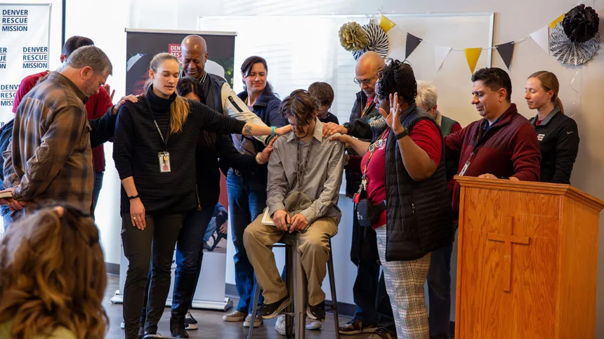
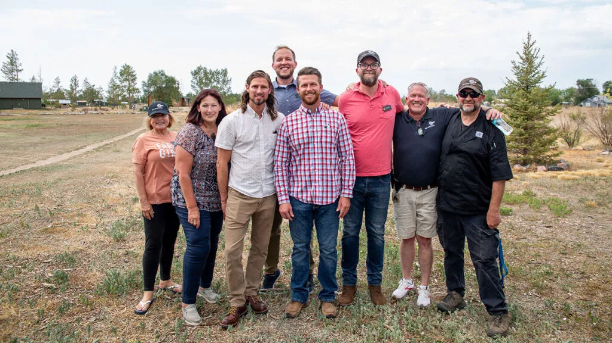
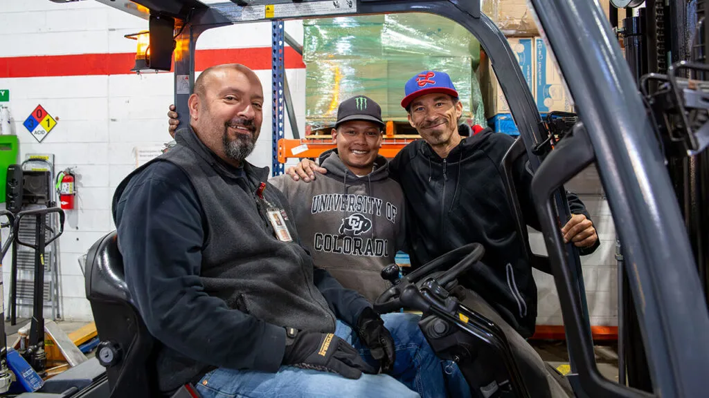
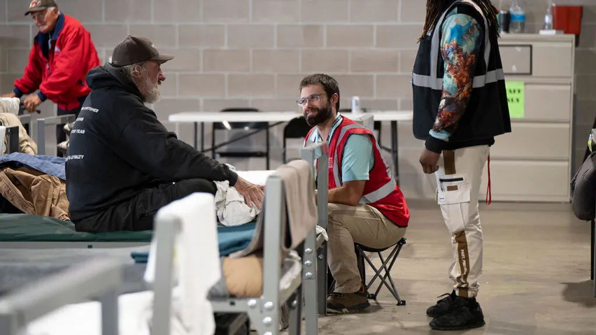
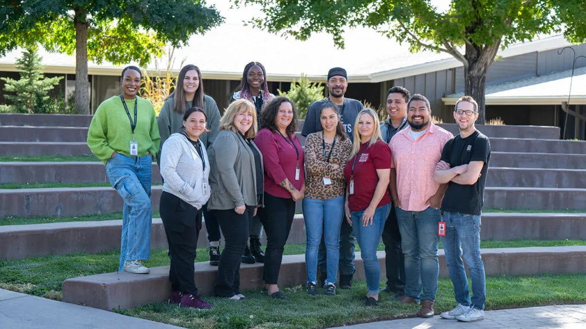
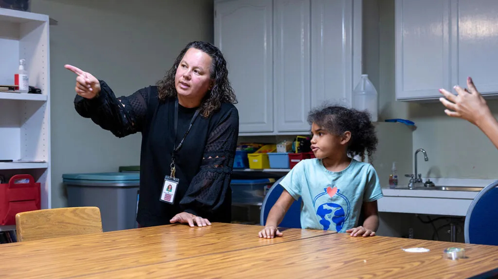
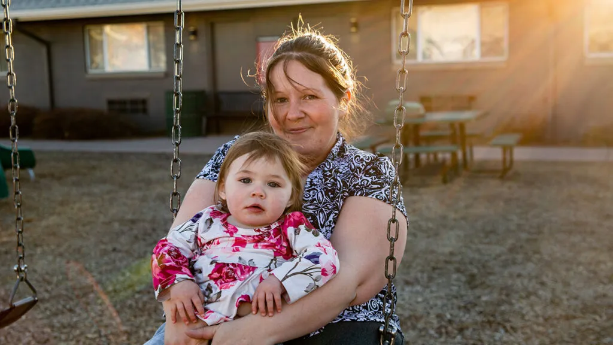

Join Our Team of Passionate Individuals
Why Work at Denver Rescue Mission?
Are you looking for meaningful work? Co-workers who treat you like family? We are a faith-based, non-profit organization in Denver and northern Colorado committed to bringing an end to homelessness one person at a time.
Christ-Centered Work





Hiring Now
Every position at the Mission is an opportunity for ministry and is vital to the fulfillment of our mission.
“I think that Denver Rescue Mission reminds people that God loves them. People who have literally lost all of the hope that they had.”
MaDonna, Bridge Program Graduate

“I think that Denver Rescue Mission reminds people that God loves them. People who have literally lost all of the hope that they had.”
MaDonna, Bridge Program Graduate
Meaningful Work With Great Benefits
Meaningful Work
Working at the Mission is more than just a job. Our staff members passionately believe in what they do and are dedicated to helping people in need change their lives, which in turn helps improve our communities.
Caring Community
By working together across all areas of the Mission, we are striving to make our organization a leader in how we care for, serve and mentor our guests, program participants and each other.
Health & Wellness
Your health and wellness are important to us. That’s why we offer generous health insurance options including an employer contribution to an HSA, an HMO plan with a FSA option, paid term life insurance, long-term disability and $1,000 adoption assistance benefit.
Vision, Dental & More
Employees can opt in for a dental insurance plan and a vision care package, and our Employee Assistance Program offers a wide range of confidential support, resources and referrals for every aspect of your work and personal life.
Retirement
In order to help employees plan for their future, we offer a 401(k) retirement savings plan with matched contributions at 100% up to 5% of your salary.
Time Off
Our employees enjoy nine paid holidays per year, including your birthday off with pay and an additional day off for spiritual refreshment. This is in addition to generous paid vacation and sick time. And after five years of service, employees can receive additional paid time off for a mission trip.
Staff Development
We see our employees as individuals and are committed to encouraging and assisting their learning and career progression goals by offering an educational reimbursement up to $1,000 per year.
Rewards
Every staff member receives a $25 gift card to celebrate their annual employment anniversary, and hallmark anniversaries for 5/10/15/20 years of service are marked with progressive rewards.
Anti-Discrimination Policy
Denver Rescue Mission is both an equal opportunity employer and a distinctly faith-based Christian organization. Denver Rescue Mission complies with applicable federal, state, and local employment laws, and strictly prohibits and does not tolerate discrimination against employees, applicants, or any other covered persons because of race, color, national origin or ancestry, ethnicity, sex, sexual orientation, gender identity, age, disability, citizenship, parental status, marital status, political ideology, or current or prospective service in the uniformed services. This policy applies to all terms, conditions, and privileges of employment including recruitment, employment, training, and promotion opportunities. Based upon Title VII of the Civil Rights Act of 1964, the Colorado Anti-Discrimination Act, and the U.S. Constitution, Denver Rescue Mission has the right to, and does, hire only candidates who agree with our Statement of Faith and align with our Christian mission.